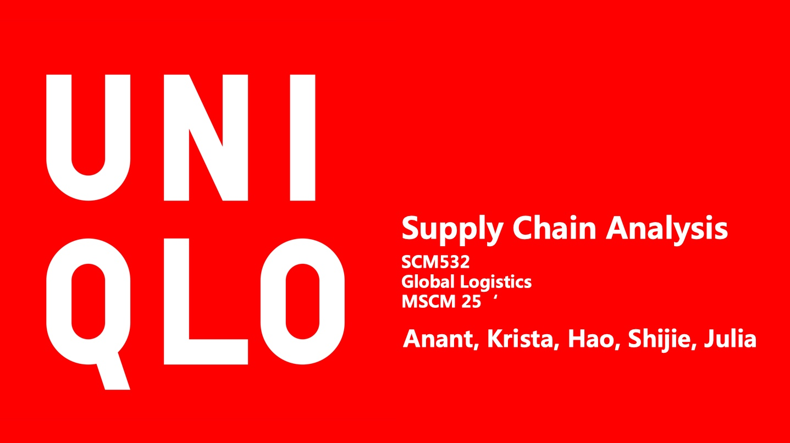
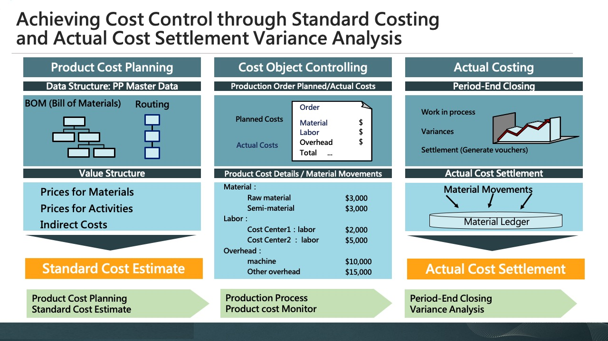
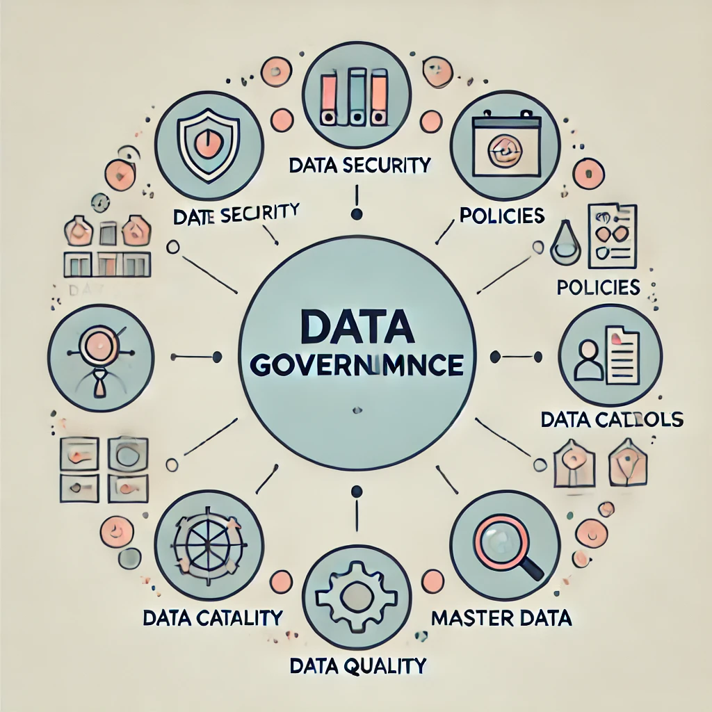

This project delivers a comprehensive analysis of traffic accidents in Seattle through Python, SQL, and R.
By extracting and cleaning datasets with SQL, performing statistical analyses and visualization in R, and applying Python for advanced data modeling and visualization, this analysis uncovers critical trends, accident hotspots, and underlying factors such as Speeding, DUI, and road conditions.

We present an in-depth analysis of Uniqlo’s global supply chain strategy, highlighting its integration of design, production, and sales processes.
This work also offers a comparative analysis with Zara, examining differences in logistics models, market strategies, and operational efficiencies to showcase how Uniqlo leverages its supply chain to drive growth and maintain competitiveness in the global market.

I have extensive hands-on experience in Cost Center Accounting, Product Cost Planning, Margin Analysis, and Profitability Analysis. I've previously assisted clients in implementing SAP S/4HANA systems, optimizing financial processes, and enhancing cost management capabilities. My expertise lies in leveraging SAP solutions to help organizations increase profitability and achieve their financial objectives.

II'm experienced in developing Excel VBA macros for data validation and logic checks, ensuring compliance with accounting principles. My VBA skills help businesses achieve greater accuracy and efficiency in financial data analysis, significantly reducing the risk of errors during financial reporting.

I led 5 workshops to establish standardized data policies, enhance data cataloging practices, and optimize master data management. These collaborative sessions successfully reduced data discrepancies by 40%, streamlined data processing efficiency by 30%, and significantly strengthened organizational data trust.
Ultimately, the project culminated in delivering a comprehensive ESG data dashboard, empowering stakeholders with actionable insights and reinforcing our commitment to sustainable, data-driven decision-making.